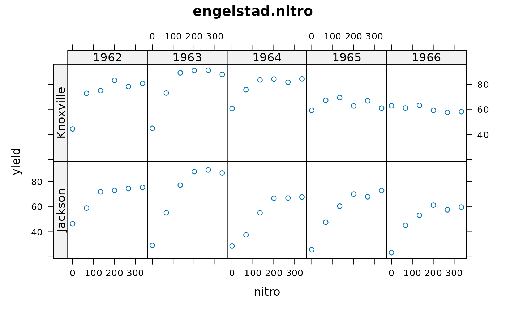
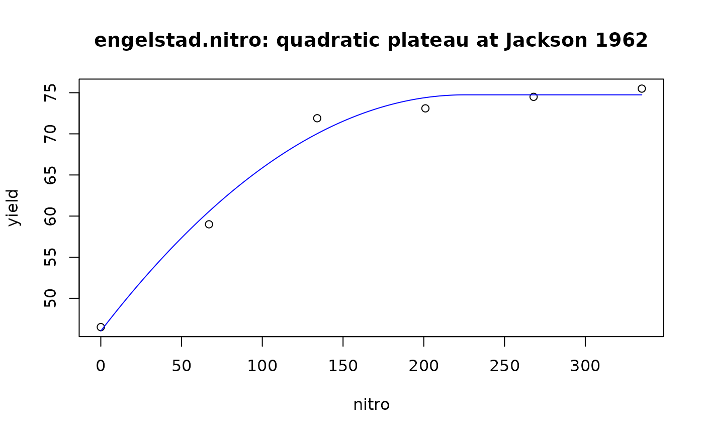

Multi-environment trial of corn with nitrogen fertilizer
engelstad.nitro.RdCorn yield response to nitrogen fertilizer for a single variety of corn at two locations over five years
Format
A data frame with 60 observations on the following 4 variables.
loclocation, 2 levels
yearyear, 1962-1966
nitronitrogen fertilizer kg/ha
yieldyield, quintals/ha
Details
Corn yield response to nitrogen fertilizer for a single variety of corn at two locations in Tennessee over five years. The yield data is the mean of 9 replicates. The original paper fits quadratic curves to the data. Schabenberger and Pierce fit multiple models including linear plateau. The example below fits a quadratic plateau for one year/loc. In the original paper, the 1965 and 1966 data for the Knoxville location was not used as it appeared that the response due to nitrogen was minimal in 1965 and nonexistant in 1966. The economic optimum can be found by setting the tangent equal to the ratio of (fertilizer price)/(grain price).
Source
Engelstad, OP and Parks, WL. 1971. Variability in Optimum N Rates for Corn. Agronomy Journal, 63, 21--23.
References
Schabenberger, O. and Pierce, F.J., 2002. Contemporary statistical models for the plant and soil sciences, CRC. Page 254-259.
Examples
library(agridat)
data(engelstad.nitro)
dat <- engelstad.nitro
libs(latticeExtra)
useOuterStrips(xyplot(yield ~ nitro | factor(year)*loc, dat,
main="engelstad.nitro"))

# Fit a quadratic plateau model to one year/loc
j62 <- droplevels(subset(dat, loc=="Jackson" & year==1962))
# ymax is maximum yield, M is the change point, k affects curvature
m1 <- nls(yield ~ ymax*(nitro > M) +
(ymax - (k/2) * (M-nitro)^2) * (nitro < M),
data= j62,
start=list(ymax=80, M=150, k=.01))
# Plot the raw data and model
newdat <- data.frame(nitro=seq(0,max(dat$nitro)))
p1 <- predict(m1, new=newdat)
plot(yield ~ nitro, j62)
lines(p1 ~ newdat$nitro, col="blue")
title("engelstad.nitro: quadratic plateau at Jackson 1962")

# Optimum nitro level ignoring prices = 225
coef(m1)['M']
#> M
#> 225.3404
# Optimum nitro level using $0.11 for N cost, $1.15 for grain price = 140
# Set the first derivative equal to N/corn price, k(M-nitro)=.11/1.15
coef(m1)['M']-(.11/1.15)/coef(m1)['k']
#> M
#> 140.7837